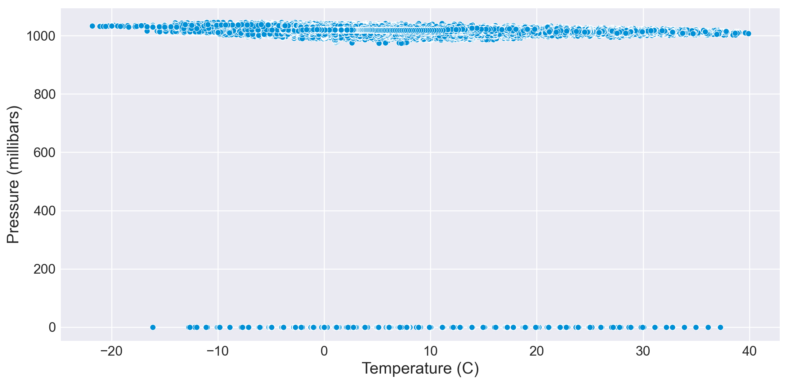
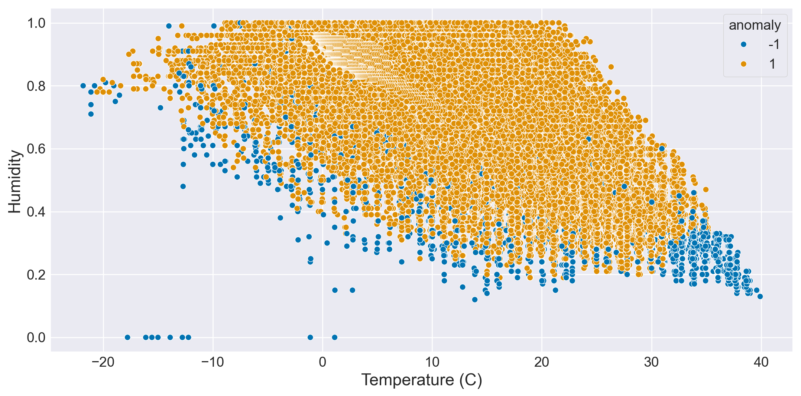

import pandas as pd
import numpy as np
import pandas as pd
import seaborn as sns
import matplotlib.pyplot as plt
%matplotlib inline
import seaborn as sns
import plotly.express as px
import datetime as dt
from datetime import timedelta
import matplotlib.dates as mdates
plt.rcParams['figure.figsize'] = (12,6)
plt.style.use('fivethirtyeight')Uncover Anomalies in England’s Weather: A Data-driven Exploration
Introduction
#In this blog post, we take a deep dive into England’s weather records using Python and libraries like pandas, seaborn, and matplotlib. Our goal is to uncover anomalies in temperature, wind, pressure, and humidity through statistical analysis and machine learning. ```
Exploring the Dataset
df=pd.read_csv("EnglandWeather.csv")
df
df.head().style.set_properties(**{'background-color':'lightgreen','color':'black','border-color':'#8b8c8c'})
df.shape
df.dtypes
df.sort_values('Formatted Date', inplace= True)
df| Formatted Date | Summary | Precip Type | Temperature (C) | Wind Speed (km/h) | Pressure (millibars) | Humidity | |
|---|---|---|---|---|---|---|---|
| 2880 | 2006-01-01 00:00:00.000 +0100 | Partly Cloudy | rain | 0.577778 | 17.1143 | 1016.66 | 0.89 |
| 2881 | 2006-01-01 01:00:00.000 +0100 | Mostly Cloudy | rain | 1.161111 | 16.6152 | 1016.15 | 0.85 |
| 2882 | 2006-01-01 02:00:00.000 +0100 | Mostly Cloudy | rain | 1.666667 | 20.2538 | 1015.87 | 0.82 |
| 2883 | 2006-01-01 03:00:00.000 +0100 | Overcast | rain | 1.711111 | 14.4900 | 1015.56 | 0.82 |
| 2884 | 2006-01-01 04:00:00.000 +0100 | Mostly Cloudy | rain | 1.183333 | 13.9426 | 1014.98 | 0.86 |
| ... | ... | ... | ... | ... | ... | ... | ... |
| 89728 | 2016-12-31 19:00:00.000 +0100 | Mostly Cloudy | rain | 0.488889 | 9.7566 | 1020.03 | 0.86 |
| 89729 | 2016-12-31 20:00:00.000 +0100 | Mostly Cloudy | rain | 0.072222 | 9.4185 | 1020.27 | 0.88 |
| 89730 | 2016-12-31 21:00:00.000 +0100 | Mostly Cloudy | snow | -0.233333 | 9.2736 | 1020.50 | 0.89 |
| 89731 | 2016-12-31 22:00:00.000 +0100 | Mostly Cloudy | snow | -0.472222 | 9.2414 | 1020.65 | 0.91 |
| 89732 | 2016-12-31 23:00:00.000 +0100 | Mostly Cloudy | snow | -0.677778 | 9.2253 | 1020.72 | 0.92 |
96453 rows × 7 columns
Data Preprocessing:
#We clean and preprocess the data by converting the 'Formatted Date' column to a datetime object and extracting additional temporal features.
df['Formatted Date'] = pd.to_datetime(df.sort_values('Formatted Date')['Formatted Date'],utc=True)
df['Formatted Date'] = df['Formatted Date'].sort_values()
df['Formatted Date']
df.dtypes
df.isnull().sum()
df['Day'] = df['Formatted Date'].dt.day
df['Month'] = df['Formatted Date'].dt.month
df['Year'] = df['Formatted Date'].dt.year
df.groupby('Year')
Year = pd.to_datetime(df['Formatted Date']).dt.year
Month = pd.to_datetime(df['Formatted Date']).dt.monthDetecting Anomalies using Z-Scores:
#A simple way to detect potential anomalies is by calculating z-scores. Z-scores measure how many standard deviations each data point is from the mean. We compute z-scores and Euclidean distances for key weather variables like temperature, wind, pressure, and humidity. Points with high Euclidean distances are flagged as potential anomalies.
variables = ['Temperature (C)', 'Wind Speed (km/h)', 'Pressure (millibars)', 'Humidity']
z_scores = (df[variables] - df[variables].mean()) / df[variables].std()
z_scores
euclidean_distance = pd.DataFrame({'euclidean_distance': z_scores.apply(lambda x: x**2).sum(axis=1)**0.5})
threshold = euclidean_distance.mean() + 3 * euclidean_distance.std()
thresholdeuclidean_distance 4.914545
dtype: float64#Identify the anomalies as those data points with a score above the threshold.anomalies = df[euclidean_distance > threshold]
sns.set_style("darkgrid")
sns.scatterplot(data=df, x='Temperature (C)', y='Pressure (millibars)')
sns.scatterplot(data=anomalies, x='Temperature (C)', y='Pressure (millibars)', color='red')<Axes: xlabel='Temperature (C)', ylabel='Pressure (millibars)'>
Isolation Forest
# We employ the Isolation Forest algorithm, which isolates anomalies by randomly splitting the data.After training a model, we can score each data point based on how anomalous the model predicts it to be.
#Looking at the humidity vs temperature scatterplot colored by these anomaly scores clearly highlights the most unusual points. Isolation Forests excel at detecting anomalies that are hard to find with traditional statistical methods.from sklearn.ensemble import IsolationForest
features = ['Temperature (C)', 'Wind Speed (km/h)', 'Pressure (millibars)', 'Humidity']
X = df[features]
model = IsolationForest(contamination=0.05)
model.fit(X)
df['anomaly_score'] = model.decision_function(X)
df['anomaly'] = model.predict(X)
sns.scatterplot(data=df, x='Temperature (C)', y='Humidity', hue='anomaly', palette='colorblind')<Axes: xlabel='Temperature (C)', ylabel='Humidity'>
Conclusion
#By combining statistical analysis and machine learning, we've uncovered intriguing anomalies in England's weather data. Understanding these irregularities helps ensure data quality and prompts deeper meteorological insights. As the volume of weather data grows, having data-driven anomaly detection tools becomes increasingly important for researchers and forecasters.